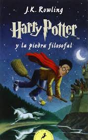

Formamos para el desarrollo humano y social.
La mejor biblioteca para Campo Valdes
Ventajas de BiblioCV.
Prestamos gratis
Prestamos los libros que quieran gratis a todos los estudiantes.
Libros Virtuales
Todos los libros de la biblioteca escolar están disponibles aquí.
Acceso 24/7
Puedes entrar para leer tus libros donde y cuando quieras.
Especiales y recientes en nuestra biblioteca.

Harry Potter y La Piedra Filosofal
DisposibleHarry Potter y La Piedra Filosofal
DisposibleHarry Potter y La Piedra Filosofal
No disponibleHarry Potter y La Piedra Filosofal
DisposibleLibro recomendado de la semana.
Harry Potter y La Piedra Filosofal
Harry Potter, de diez años, es un huérfano que vive en el suburbio ficticio londinense de Little Whinging, Surrey, con los Dursley: su indiferente tía Petunia, su repugnante tío Vernon y su mimado primo Dudley. Los Dursley apenas toleran a Harry y Dudley lo intimida. Un día, Harry se sorprende al recibir una carta dirigida a él en el armario debajo de las escaleras (donde duerme). Sin embargo, antes de que pueda abrir la carta, el tío Vernon la toma. Posteriormente, cada día llegan cartas para Harry, en cantidades cada vez mayores, pero el tío Vernon las rompe todas y, finalmente, en un intento por escapar de las misivas, los Dursley van a una miserable choza en una pequeña isla. En el cumpleaños número 11 de Harry, llega un gigante llamado Hagrid y revela que Harry es un mago y que ha sido aceptado en el Colegio Hogwarts de Magia y Hechicería. También arroja luz sobre el pasado de Harry, informándole al niño que sus padres, un mago y una bruja, fueron asesinados por el malvado mago Voldemort y que Harry adquirió la cicatriz del rayo en su frente durante el enfrentamiento fatal. Al llegar a la escuela, los estudiantes se clasifican en una de cuatro casas —Gryffindor, Hufflepuff, Ravenclaw o Slytherin. Harry termina en Gryffindor, y durante su agitado primer año en Hogwarts se hace amigo cercano de otros dos miembros de la casa, Ron Weasley, que proviene de una antigua familia de magos, y Hermione Granger, cuyos padres son muggles (aquellos que no son mágicos). Harry también descubre que tiene un enemigo en Draco Malfoy (Slytherin). Además, la destreza de Harry al volar en una escoba lo convierte en una estrella del equipo de Quidditch de Gryffindor. Con la esperanza de meter a Harry y sus amigos en problemas, Draco los engaña para que abandonen sus habitaciones una noche, violando las reglas de la escuela. Mientras intenta evitarAl ser atrapados, descubren a un perro de tres cabezas vigilando una trampilla. Poco a poco, Harry llega a la conclusión de que al profesor Snape, que enseña Pociones, le desagrada intensamente y está tratando de apoderarse de todo lo que hay detrás de la trampilla. Harry recibe el manto de invisibilidad de su padre como regalo de Navidad y, mientras explora bajo la cubierta del manto, encuentra el Espejo de Erised, en el que puede ver a sus padres. Más tarde, el director Albus Dumbledore explica que el espejo muestra el deseo más profundo del espectador.